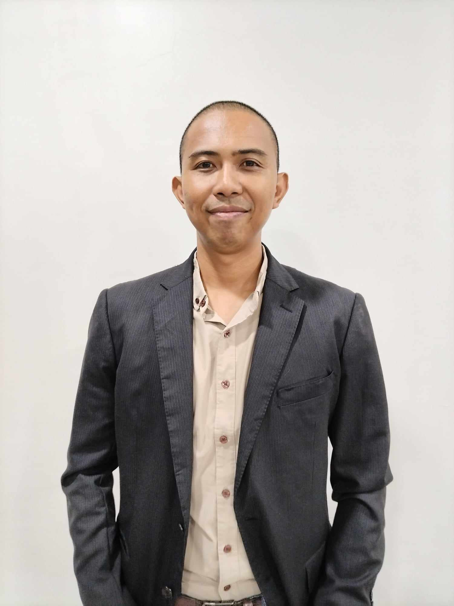

John Weshly C. Torreno
Blk. 5 Lot 3 San Lorenzo Ruiz Village, Talisay City, Negros Occidental
Phone: 09851080001
Email: weshly2006@gmail.com
Languages: English, Tagalog, Hiligaynon
Religion: Assemblies of God
Professional Summary
Results-driven and dependable professional with over 10 years of experience in customer service, technical support,
and cloud telephony systems. Adept at resolving technical issues, analyzing data, and collaborating with internal
teams and vendors. Committed to delivering service excellence with a solution-focused mindset.
Core Skills & Qualifications
- Excellent English communication and pronunciation
- Microsoft Office (Word, Excel, PowerPoint, Outlook)
- Technical Support & Troubleshooting (SIP, VOIP, PBX)
- Customer Service and Consultative Sales
- Data analysis using CDRs and PCAPs
- Ticket escalation and vendor collaboration
- Organized and efficient in workflow management
- Fast learner and team player
Work Experience
Tier 1 NOC Cloud Carrier Support Specialist – NUSO (July 2024 – Nov 2024)
- Troubleshot SIP call issues: PDD, ASR, FAS, 503 errors
- Analyzed CDRs and PCAPs for issue resolution
- Collaborated with vendors for quality assurance
- Maintained service excellence through timely ticket responses
Tier 1 NOC Support Specialist – TeamMate Technology (Nov 2023 – Apr 2024)
- Resolved PBX and Microsoft Teams integration issues
- Managed and prioritized support tickets
- Enhanced user experience with proactive communication
Technical and Sales Support Associate – Concentrix (Oct 2012 – Jan 2022)
- Handled support for internet, cable, VOIP, and security services
- Addressed billing and account concerns
- Resolved VOIP issues including porting and activation
- Upsold bundled services through consultative selling
Education
- Technological University of the Philippines Visayas – Diploma in Electrical Engineering Technology (2005–2009)
- Rafael B. Lacson Memorial High School – Secondary Diploma (2001–2005) – MASA Scholar
- Carlos A. Hilado Memorial State College – Primary Diploma (1995–2001)
Training & Internships
- Assembly Section Operator – Toyota Autoparts Philippines (Dec 2008 – Apr 2009)
- Trainee – Maintenance & Engineering, Kooll Company Inc. (May–Aug 2008; Apr–May 2007)
References
- Joren Saulda – Tier 1 NOC Support, iReply – 0977-319-3041
- Dave R. Marcellana – Software QA Engineer, iReply – 0991-893-8183
- Jaika Krizelle T. Santillan – Teacher II, Manapla National High School – 0950-441-8931